<mat-sidenav #sidenav [mode]="over" [(opened)]="opened" class="bottom-to-top">
  <div class="logo-menu" fxLayout="column" fxLayoutAlign="center center">
    
  </div>
  <div class="menu">
    <mat-nav-list>
      <div class="button-nav active" routerLink="/main/home">
        
        <p class="text-nav long-text">Dashboard</p>
      </div>
    </mat-nav-list>

    <mat-nav-list>
      <div class="button-nav" routerLink="/main/shops">
        
        <p class="text-nav">Shops</p>
      </div>
    </mat-nav-list>

    <mat-nav-list>
      <div class="button-nav">
        
        <p class="text-nav">Products</p>
      </div>
    </mat-nav-list>

    <mat-nav-list class="button-nav">
      
      <p class="text-nav">Setting</p>
    </mat-nav-list>
  </div>
</mat-sidenav>

<mat-sidenav-content>
  <mat-toolbar class="header-box-shadow">
    <button mat-icon-button (click)="sidenav.toggle()" fxShow.sm="true" fxShow.gt-sm="false">
      <mat-icon>menu</mat-icon>
    </button>
    <button mat-button ngClass.gt-sm="margin-left">
      IronmongeryShop
    </button>
    <span class="spacer"></span>
    <button mat-button [matMenuTriggerFor]="menu" fxShow.lt-md="false" fxShow.gt-sm="true">
      <mat-icon>language</mat-icon>
      <span class="ml-2">Change Language</span>
    </button>
    <button mat-icon-button [matMenuTriggerFor]="menu" fxShow.lt-md="true" fxShow.gt-sm="false">
      <mat-icon>language</mat-icon>
    </button>
    <mat-menu #menu="matMenu" overlapTrigger="false">
      <button mat-menu-item>
        <span class="flag-icon flag-icon-us mr-1"></span>
        <span>English</span>
      </button>
      <button mat-menu-item>
        <span class="flag-icon flag-icon-es mr-1"></span>
        <span>Spanish</span>
      </button>
    </mat-menu>
    <mat-icon class="ml-3" title="Logout" (click)="logout()">exit_to_app</mat-icon>
  </mat-toolbar>

    <div ngClass.gt-sm="container content-wrapper">

      <div class="row"><!-- START ROW -->

        <div class="col-md-12">

          <router-outlet></router-outlet>

        </div>

      </div>

    </div>

</mat-sidenav-content>
